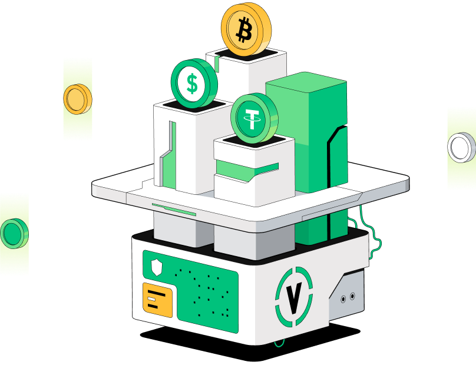
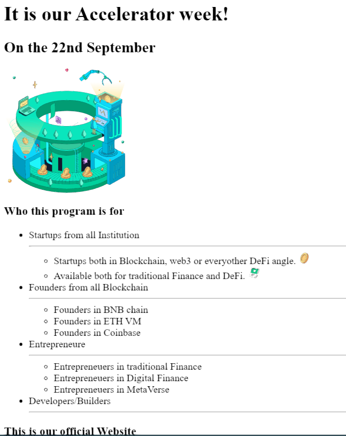

Financial Custody
Portfolio
So far the best portfolio in the financial industry.
Feel free to explore our Cataloge of early-stage venture opportunities.
we are the Industry Leading accelarator nurturing the web3 founders through incubation and market presence.
Check out the Best Coin to be in your portfolio today.

Accelaration
Just a little About us
__Synergistic Focused...
In an era where innovation drives progress,
startups are the heartbeat of change,
propelling industries forward with their fresh ideas and disruptive technologies.
Reach out and Contact us
__Due Diligence...
Highly skilled in conducting comprehensive due diligence on blockchain startups and projects,
including technical assessments and risk analysis.